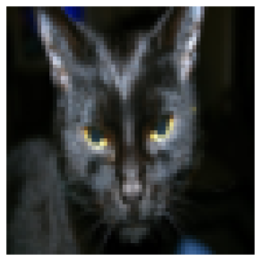
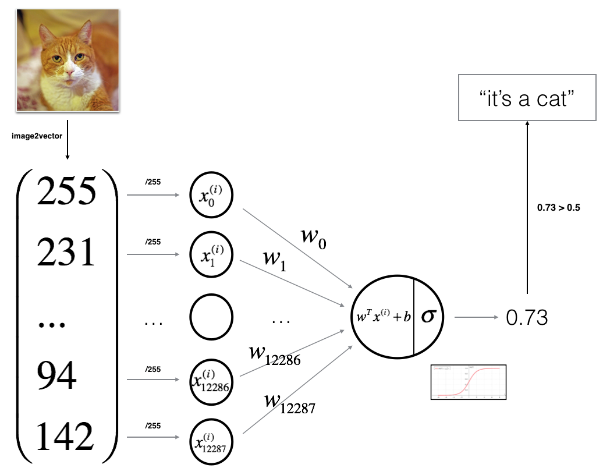
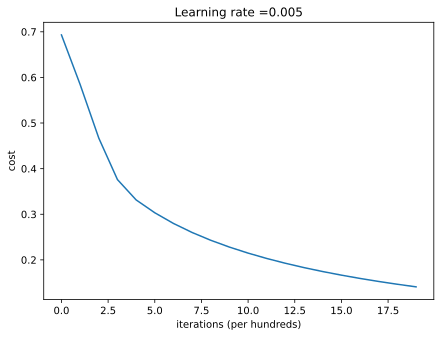
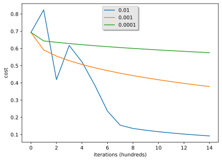
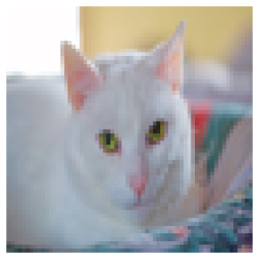
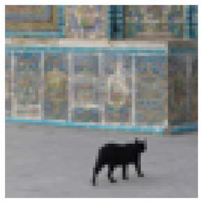

import numpy as np
import copy
import matplotlib.pyplot as plt
import h5py
from PIL import ImageLab: Logistic Regression with a Neural Network Mindset
deep-learning
logistic-regression
numpy
lab
Build a cat classifier from scratch in NumPy: preprocess images, implement propagation and gradient descent, assemble the model, and tune the learning rate.
This is the first required programming assignment of the course. You build a logistic regression classifier that recognizes cats, structured with a neural network mindset, which also hones your intuitions about deep learning. Everything the course has covered so far comes together here: the notation and the model, the derivative formulas, the vectorized implementation, and the NumPy functions from the previous lab.
You will learn to build the general architecture of a learning algorithm, including
- initializing parameters,
- calculating the cost function and its gradient,
- using an optimization algorithm (gradient descent),
and then gather all three functions into a main model() function, in the right order.
Two standing instructions: do not use for loops or while loops unless explicitly asked, and use np.dot(X, Y) to calculate dot products.
Packages
First, import all the packages needed during this assignment.
- numpy is the fundamental package for scientific computing with Python.
- h5py is a common package to interact with a dataset stored in an H5 file, a compact binary format often used for large numerical datasets.
- matplotlib is a famous library to plot graphs in Python.
- PIL is used at the end to test the model with your own pictures.
copyis from the standard library; itsdeepcopyprotects the caller’s arrays from being modified in place during optimization.
Overview of the Problem Set
Problem statement. You are given a dataset containing
- a training set of
m_trainimages labeled as cat (\(y = 1\)) or non-cat (\(y = 0\)), - a test set of
m_testimages labeled as cat or non-cat, - each image of shape
(num_px, num_px, 3), where 3 is for the three RGB channels. Each image is square.
You will build a simple image-recognition algorithm that correctly classifies pictures as cat or non-cat. The dataset ships as two H5 files, which you can download here: train_catvnoncat.h5 (2.5 MB) and test_catvnoncat.h5 (0.6 MB). In the original assignment the loader ships in a helper file, lr_utils.py, and the graded exercise checks live in public_tests.py.
NoteLab Files Download
Everything this lab needs, ready to download.
- train_catvnoncat.h5 (2.5 MB) and test_catvnoncat.h5 (0.6 MB), the cat vs non-cat image dataset
- lr_utils.py (1 KB), the dataset loader
- public_tests.py (8 KB) and test_utils.py (2 KB), the graded exercise checks
To run the original notebook outside this page, put the two H5 files in a datasets/ folder next to the .py files, matching the layout that lr_utils.load_dataset() expects.
The loader below reproduces lr_utils.py. It opens each H5 file with h5py.File and pulls out three things: the image arrays, the label vectors, and the list of class names (non-cat, cat). It also reshapes the label vectors to the course’s row-vector convention, shape \((1, m)\).
def load_dataset():
train_dataset = h5py.File('../../media/deep-learning/catvnoncat/train_catvnoncat.h5', "r")
train_set_x_orig = np.array(train_dataset["train_set_x"][:]) # train set features
train_set_y_orig = np.array(train_dataset["train_set_y"][:]) # train set labels
test_dataset = h5py.File('../../media/deep-learning/catvnoncat/test_catvnoncat.h5', "r")
test_set_x_orig = np.array(test_dataset["test_set_x"][:]) # test set features
test_set_y_orig = np.array(test_dataset["test_set_y"][:]) # test set labels
classes = np.array(test_dataset["list_classes"][:]) # the list of classes
train_set_y_orig = train_set_y_orig.reshape((1, train_set_y_orig.shape[0]))
test_set_y_orig = test_set_y_orig.reshape((1, test_set_y_orig.shape[0]))
return train_set_x_orig, train_set_y_orig, test_set_x_orig, test_set_y_orig, classes
# Loading the data (cat/non-cat)
train_set_x_orig, train_set_y, test_set_x_orig, test_set_y, classes = load_dataset()The image datasets carry _orig at the end because we are going to preprocess them. After preprocessing we end up with train_set_x and test_set_x (the labels need no preprocessing). Each entry of train_set_x_orig is an array representing an image. You can visualize an example, and feel free to change the index value to see other images.
# Example of a picture
index = 25
plt.imshow(train_set_x_orig[index])
plt.axis('off')
plt.show()
print("y = " + str(train_set_y[:, index]) + ", it is a '"
+ classes[np.squeeze(train_set_y[:, index])].decode("utf-8") + "' picture.")
y = [1], it is a 'cat' picture.Many software bugs in deep learning come from having matrix or vector dimensions that do not fit. Keeping your dimensions straight goes a long way toward eliminating bugs. So the first exercise is to read the key dimensions off the arrays: m_train (number of training examples), m_test (number of test examples), and num_px (the height and width of each image). Remember that train_set_x_orig has shape (m_train, num_px, num_px, 3), so m_train is train_set_x_orig.shape[0].
m_train = train_set_x_orig.shape[0]
m_test = test_set_x_orig.shape[0]
num_px = train_set_x_orig.shape[1]
print("Number of training examples: m_train = " + str(m_train))
print("Number of testing examples: m_test = " + str(m_test))
print("Height/Width of each image: num_px = " + str(num_px))
print("Each image is of size: (" + str(num_px) + ", " + str(num_px) + ", 3)")
print("train_set_x shape: " + str(train_set_x_orig.shape))
print("train_set_y shape: " + str(train_set_y.shape))
print("test_set_x shape: " + str(test_set_x_orig.shape))
print("test_set_y shape: " + str(test_set_y.shape))Number of training examples: m_train = 209
Number of testing examples: m_test = 50
Height/Width of each image: num_px = 64
Each image is of size: (64, 64, 3)
train_set_x shape: (209, 64, 64, 3)
train_set_y shape: (1, 209)
test_set_x shape: (50, 64, 64, 3)
test_set_y shape: (1, 50)For convenience, now reshape the images of shape (num_px, num_px, 3) into a NumPy array of shape (num_px * num_px * 3, 1), so that the training and test sets become arrays where each column is one flattened image, exactly the \(X\) matrix convention from the lectures. There should be m_train (respectively m_test) columns.
A trick to flatten a matrix X of shape (a, b, c, d) into shape (b*c*d, a) is
X_flatten = X.reshape(X.shape[0], -1).T # X.T is the transpose of XThe -1 tells NumPy to infer the second dimension, giving (a, b*c*d), and the transpose flips it so examples sit in columns.
# Reshape the training and test examples
train_set_x_flatten = train_set_x_orig.reshape(train_set_x_orig.shape[0], -1).T
test_set_x_flatten = test_set_x_orig.reshape(test_set_x_orig.shape[0], -1).T
# The first 10 pixels of the second training image, before and after flattening
print("original, image 1, row 0, first 10 red values:")
print(train_set_x_orig[1, 0, 0:4].ravel()[0:10])
print("flattened, column 1, first 10 values:")
print(train_set_x_flatten[0:10, 1])
print()
print("train_set_x_flatten shape: " + str(train_set_x_flatten.shape))
print("train_set_y shape: " + str(train_set_y.shape))
print("test_set_x_flatten shape: " + str(test_set_x_flatten.shape))
print("test_set_y shape: " + str(test_set_y.shape))original, image 1, row 0, first 10 red values:
[196 192 190 193 186 182 188 179 174 213]
flattened, column 1, first 10 values:
[196 192 190 193 186 182 188 179 174 213]
train_set_x_flatten shape: (12288, 209)
train_set_y shape: (1, 209)
test_set_x_flatten shape: (12288, 50)
test_set_y shape: (1, 50)The two printed rows are the same ten numbers, which is the check worth making after any reshape. Column 1 of the flattened array holds image 1, and its first values are the pixels that image started with, in the order they were stored. Nothing was scrambled and nothing was mixed between images. Had the transpose been left off, or reshape been given the dimensions the other way round, column 1 would have held fragments of several different images and the two rows would disagree.
The shape line tells the rest of the story. A \((209, 64, 64, 3)\) array became \((12288, 209)\), where \(12288 = 64 \times 64 \times 3\). Each column is one image flattened into a single tall vector, and there are 209 columns for 209 images, matching the convention that training examples stack in columns.
To represent color images, the red, green, and blue channels must be specified for each pixel, so each pixel value is actually a vector of three numbers ranging from 0 to 255.
One common preprocessing step in machine learning is to center and standardize the dataset, meaning that you subtract the mean of the whole array from each example and then divide by the standard deviation of the whole array. For picture datasets, it is simpler, more convenient, and works almost as well to just divide every row by 255 (the maximum value of a pixel channel).
train_set_x = train_set_x_flatten / 255.
test_set_x = test_set_x_flatten / 255.
NoteWhat You Need to Remember
Common steps for preprocessing a new dataset are
- Figure out the dimensions and shapes of the problem (
m_train,m_test,num_px, and so on). - Reshape the datasets so that each example is a vector of size
(num_px * num_px * 3, 1). - “Standardize” the data.
General Architecture of the Learning Algorithm
It is time to design a simple algorithm to distinguish cat images from non-cat images. You will build a logistic regression classifier, using a neural network mindset. The following figure explains why logistic regression is actually a very simple neural network: the flattened pixels feed a single unit that computes \(z\) and applies the sigmoid.

Mathematically, for one example \(x^{(i)}\),
\[ z^{(i)} = w^T x^{(i)} + b \qquad \hat{y}^{(i)} = a^{(i)} = \text{sigmoid}\big(z^{(i)}\big) \]
\[ \mathcal{L}\big(a^{(i)}, y^{(i)}\big) = -y^{(i)} \log\big(a^{(i)}\big) - \big(1 - y^{(i)}\big) \log\big(1 - a^{(i)}\big) \]
and the cost is computed by averaging over all training examples,
\[ J = \frac{1}{m} \sum_{i=1}^{m} \mathcal{L}\big(a^{(i)}, y^{(i)}\big) \]
Key steps. In this exercise you carry out the following: initialize the parameters of the model, learn the parameters by minimizing the cost, use the learned parameters to make predictions on the test set, then analyze the results and conclude.
Building the Parts of Our Algorithm
The main steps for building a neural network are
- Define the model structure (such as the number of input features).
- Initialize the model’s parameters.
- Loop: calculate the current loss (forward propagation), calculate the current gradient (backward propagation), update the parameters (gradient descent).
You often build steps 1 to 3 separately and integrate them into one function called model().
Helper Functions
Using your code from the previous lab, implement sigmoid(). You need \(\text{sigmoid}(z) = \frac{1}{1 + e^{-z}}\) for \(z = w^T x + b\) to make predictions.
def sigmoid(z):
"""
Compute the sigmoid of z
Arguments:
z -- A scalar or numpy array of any size.
Return:
s -- sigmoid(z)
"""
s = 1 / (1 + np.exp(-z))
return s
print("sigmoid([0, 2]) = " + str(sigmoid(np.array([0, 2]))))sigmoid([0, 2]) = [0.5 0.88079708]Initializing Parameters
Initialize w as a vector of zeros of shape (dim, 1) with np.zeros(), and b as the float 0. Zero initialization is fine for logistic regression, because the cost surface is convex, so gradient descent reaches the same optimum from any starting point.
def initialize_with_zeros(dim):
"""
This function creates a vector of zeros of shape (dim, 1) for w
and initializes b to 0.
Argument:
dim -- size of the w vector we want (or number of parameters in this case)
Returns:
w -- initialized vector of shape (dim, 1)
b -- initialized scalar (corresponds to the bias) of type float
"""
w = np.zeros((dim, 1))
b = 0.0
return w, b
dim = 2
w, b = initialize_with_zeros(dim)
print("w = " + str(w))
print("b = " + str(b))w = [[0.]
[0.]]
b = 0.0Forward and Backward Propagation
Now that the parameters are initialized, implement propagate(), which computes the cost function and its gradient in one pass. These are exactly the vectorized formulas derived in the lectures.
Forward propagation. From the input \(X\), compute the activations and the cost,
\[ A = \sigma(w^T X + b) = \begin{bmatrix} a^{(1)} & a^{(2)} & \cdots & a^{(m)} \end{bmatrix} \]
\[ J = -\frac{1}{m} \sum_{i=1}^{m} \Big( y^{(i)} \log\big(a^{(i)}\big) + \big(1 - y^{(i)}\big) \log\big(1 - a^{(i)}\big) \Big) \]
Backward propagation. The two gradient formulas are
\[ \frac{\partial J}{\partial w} = \frac{1}{m} X (A - Y)^T \qquad \frac{\partial J}{\partial b} = \frac{1}{m} \sum_{i=1}^{m} \big(a^{(i)} - y^{(i)}\big) \]
In code, the sum in the cost uses element-wise products and np.sum rather than a loop, and np.squeeze strips the cost down to a plain scalar.
def propagate(w, b, X, Y):
"""
Implement the cost function and its gradient for the propagation
explained above
Arguments:
w -- weights, a numpy array of size (num_px * num_px * 3, 1)
b -- bias, a scalar
X -- data of size (num_px * num_px * 3, number of examples)
Y -- true "label" vector (0 if non-cat, 1 if cat) of size (1, number of examples)
Return:
grads -- dictionary containing the gradients dw and db
cost -- negative log-likelihood cost for logistic regression
"""
m = X.shape[1]
# FORWARD PROPAGATION (FROM X TO COST)
A = sigmoid(np.dot(w.T, X) + b)
cost = -1 / m * np.sum(Y * np.log(A) + (1 - Y) * np.log(1 - A))
# BACKWARD PROPAGATION (TO FIND GRAD)
dw = 1 / m * np.dot(X, (A - Y).T)
db = 1 / m * np.sum(A - Y)
cost = np.squeeze(np.array(cost))
grads = {"dw": dw,
"db": db}
return grads, costTest it on a tiny example with 2 features and 3 training examples, stacked column-wise as always.
w = np.array([[1.], [2]])
b = 1.5
X = np.array([[1., -2., -1.], [3., 0.5, -3.2]])
Y = np.array([[1, 1, 0]])
grads, cost = propagate(w, b, X, Y)
print("dw = " + str(grads["dw"]))
print("db = " + str(grads["db"]))
print("cost = " + str(cost))dw = [[ 0.25071532]
[-0.06604096]]
db = -0.1250040450043965
cost = 0.15900537707692405Optimization
You can initialize parameters and compute the cost and its gradient. Now update the parameters using gradient descent. The goal is to learn \(w\) and \(b\) by minimizing \(J\). For a parameter \(\theta\), the update rule is \(\theta = \theta - \alpha \, d\theta\), where \(\alpha\) is the learning rate. The function iterates two steps: call propagate() for the cost and gradient, then apply the update rule, recording the cost every 100 iterations to plot the learning curve later.
def optimize(w, b, X, Y, num_iterations=100, learning_rate=0.009, print_cost=False):
"""
This function optimizes w and b by running a gradient descent algorithm
Arguments:
w -- weights, a numpy array of size (num_px * num_px * 3, 1)
b -- bias, a scalar
X -- data of shape (num_px * num_px * 3, number of examples)
Y -- true "label" vector, of shape (1, number of examples)
num_iterations -- number of iterations of the optimization loop
learning_rate -- learning rate of the gradient descent update rule
print_cost -- True to print the loss every 100 steps
Returns:
params -- dictionary containing the weights w and bias b
grads -- dictionary containing the gradients of the weights and bias
costs -- list of all the costs computed during the optimization
"""
w = copy.deepcopy(w)
b = copy.deepcopy(b)
costs = []
for i in range(num_iterations):
# Cost and gradient calculation
grads, cost = propagate(w, b, X, Y)
# Retrieve derivatives from grads
dw = grads["dw"]
db = grads["db"]
# Update rule
w = w - learning_rate * dw
b = b - learning_rate * db
# Record the costs
if i % 100 == 0:
costs.append(cost)
# Print the cost every 100 training iterations
if print_cost:
print("Cost after iteration %i: %f" % (i, cost))
params = {"w": w,
"b": b}
grads = {"dw": dw,
"db": db}
return params, grads, costs
params, grads, costs = optimize(w, b, X, Y, num_iterations=100, learning_rate=0.009, print_cost=False)
print("w = " + str(params["w"]))
print("b = " + str(params["b"]))
print("dw = " + str(grads["dw"]))
print("db = " + str(grads["db"]))
print("Costs = " + str(costs))w = [[0.80956046]
[2.0508202 ]]
b = 1.5948713189708588
dw = [[ 0.17860505]
[-0.04840656]]
db = -0.08888460336847771
Costs = [array(0.15900538)]Predict
The optimization outputs the learned \(w\) and \(b\), which predict() uses to label a dataset \(X\) in two steps. First calculate \(\hat{Y} = A = \sigma(w^T X + b)\), then convert each entry into 0 (if the activation is at most 0.5) or 1 (if it is above 0.5). Here the notebook explicitly allows an if/else inside a for loop, though there is also a way to vectorize this.
def predict(w, b, X):
'''
Predict whether the label is 0 or 1 using learned logistic
regression parameters (w, b)
Arguments:
w -- weights, a numpy array of size (num_px * num_px * 3, 1)
b -- bias, a scalar
X -- data of size (num_px * num_px * 3, number of examples)
Returns:
Y_prediction -- a numpy array (vector) containing all predictions (0/1)
'''
m = X.shape[1]
Y_prediction = np.zeros((1, m))
w = w.reshape(X.shape[0], 1)
# Compute vector "A" predicting the probabilities of a cat being present
A = sigmoid(np.dot(w.T, X) + b)
for i in range(A.shape[1]):
# Convert probabilities A[0,i] to actual predictions p[0,i]
if A[0, i] > 0.5:
Y_prediction[0, i] = 1
else:
Y_prediction[0, i] = 0
return Y_prediction
w = np.array([[0.1124579], [0.23106775]])
b = -0.3
X = np.array([[1., -1.1, -3.2], [1.2, 2., 0.1]])
print("predictions = " + str(predict(w, b, X)))predictions = [[1. 1. 0.]]
NoteWhat to Remember
You have implemented several functions that
- initialize \((w, b)\),
- optimize the loss iteratively to learn \((w, b)\), by computing the cost and its gradient and updating the parameters with gradient descent,
- use the learned \((w, b)\) to predict the labels for a given set of examples.
Merge All Functions into a Model
Now put all the building blocks together, in the right order, into the overall model. The conventions are Y_prediction_test for predictions on the test set, Y_prediction_train for predictions on the training set, and parameters, grads, costs for the outputs of optimize().
def model(X_train, Y_train, X_test, Y_test, num_iterations=2000, learning_rate=0.5, print_cost=False):
"""
Builds the logistic regression model by calling the functions
implemented previously
Arguments:
X_train -- training set of shape (num_px * num_px * 3, m_train)
Y_train -- training labels of shape (1, m_train)
X_test -- test set of shape (num_px * num_px * 3, m_test)
Y_test -- test labels of shape (1, m_test)
num_iterations -- hyperparameter: number of iterations to optimize the parameters
learning_rate -- hyperparameter: learning rate used in the update rule
print_cost -- Set to True to print the cost every 100 iterations
Returns:
d -- dictionary containing information about the model.
"""
# Initialize parameters with zeros
w, b = initialize_with_zeros(X_train.shape[0])
# Gradient descent
params, grads, costs = optimize(w, b, X_train, Y_train, num_iterations, learning_rate, print_cost)
# Retrieve parameters w and b from dictionary "params"
w = params["w"]
b = params["b"]
# Predict test/train set examples
Y_prediction_test = predict(w, b, X_test)
Y_prediction_train = predict(w, b, X_train)
# Print train/test Errors
if print_cost:
print("train accuracy: {} %".format(100 - np.mean(np.abs(Y_prediction_train - Y_train)) * 100))
print("test accuracy: {} %".format(100 - np.mean(np.abs(Y_prediction_test - Y_test)) * 100))
d = {"costs": costs,
"Y_prediction_test": Y_prediction_test,
"Y_prediction_train": Y_prediction_train,
"w": w,
"b": b,
"learning_rate": learning_rate,
"num_iterations": num_iterations}
return dTrain the model on the cat dataset with 2000 iterations and a learning rate of 0.005.
logistic_regression_model = model(train_set_x, train_set_y, test_set_x, test_set_y,
num_iterations=2000, learning_rate=0.005, print_cost=True)Cost after iteration 0: 0.693147
Cost after iteration 100: 0.584508
Cost after iteration 200: 0.466949
Cost after iteration 300: 0.376007
Cost after iteration 400: 0.331463
Cost after iteration 500: 0.303273
Cost after iteration 600: 0.279880
Cost after iteration 700: 0.260042
Cost after iteration 800: 0.242941
Cost after iteration 900: 0.228004
Cost after iteration 1000: 0.214820
Cost after iteration 1100: 0.203078
Cost after iteration 1200: 0.192544
Cost after iteration 1300: 0.183033
Cost after iteration 1400: 0.174399
Cost after iteration 1500: 0.166521
Cost after iteration 1600: 0.159305
Cost after iteration 1700: 0.152667
Cost after iteration 1800: 0.146542
Cost after iteration 1900: 0.140872
train accuracy: 99.04306220095694 %
test accuracy: 70.0 %Comment. Training accuracy is close to 100%. This is a good sanity check: the model is working and has high enough capacity to fit the training data. Test accuracy is 70%, which is actually not bad for this simple model, given the small dataset and the fact that logistic regression is a linear classifier. You will build an even better classifier soon.
The model is also clearly overfitting the training data. Later in the specialization you learn how to reduce overfitting, for example with regularization. Using the code below (and changing the index variable), you can look at predictions on individual pictures of the test set. Index 5 is an example the model gets wrong: a cat it labels as non-cat. Other interesting indices to try are 6, 10, 11, and 13.
# Example of a picture that was wrongly classified
index = 5
plt.imshow(test_set_x[:, index].reshape((num_px, num_px, 3)))
plt.axis('off')
plt.show()
print("y = " + str(test_set_y[0, index]) + ", you predicted that it is a \""
+ classes[int(logistic_regression_model['Y_prediction_test'][0, index])].decode("utf-8") + "\" picture.")y = 0, you predicted that it is a "cat" picture.Let us also plot the cost recorded every 100 iterations, the learning curve.
# Plot learning curve (with costs)
costs = np.squeeze(logistic_regression_model['costs'])
plt.plot(costs)
plt.ylabel('cost')
plt.xlabel('iterations (per hundreds)')
plt.title("Learning rate =" + str(logistic_regression_model["learning_rate"]))
plt.show()
Interpretation. The cost is decreasing, which shows that the parameters are being learned. You could train the model even more on the training set by increasing the number of iterations. If you do, you might see that the training set accuracy goes up while the test set accuracy goes down. This is called overfitting.
NoteWhat to Remember From This Assignment
- Preprocessing the dataset is important.
- You implemented each function separately,
initialize(),propagate(),optimize(), then built amodel(). - Tuning the learning rate (an example of a hyperparameter) can make a big difference to the algorithm. More examples of this come later in the course.
Further Analysis: Choice of Learning Rate
For gradient descent to work well, the learning rate \(\alpha\) must be chosen wisely. It determines how rapidly the parameters update. If it is too large, we may overshoot the optimal value, and if it is too small, we need too many iterations to converge. Compare the learning curve of the model with three choices of learning rate.
learning_rates = [0.01, 0.001, 0.0001]
models = {}
for lr in learning_rates:
print("Training a model with learning rate: " + str(lr))
models[str(lr)] = model(train_set_x, train_set_y, test_set_x, test_set_y,
num_iterations=1500, learning_rate=lr, print_cost=False)
print('\n' + "-------------------------------------------------------" + '\n')
for lr in learning_rates:
plt.plot(np.squeeze(models[str(lr)]["costs"]),
label=str(models[str(lr)]["learning_rate"]))
plt.ylabel('cost')
plt.xlabel('iterations (hundreds)')
legend = plt.legend(loc='upper center', shadow=True)
frame = legend.get_frame()
frame.set_facecolor('0.90')
plt.show()Training a model with learning rate: 0.01
-------------------------------------------------------
Training a model with learning rate: 0.001
-------------------------------------------------------
Training a model with learning rate: 0.0001
-------------------------------------------------------

Interpretation.
- Different learning rates give different costs and thus different prediction results.
- If the learning rate is too large (0.01), the cost may oscillate up and down. It may even diverge, though in this example 0.01 still eventually ends up at a good value for the cost.
- A lower cost does not mean a better model. You have to check whether there is possibly overfitting, which happens when the training accuracy is a lot higher than the test accuracy.
- In deep learning, the usual recommendations are to choose the learning rate that better minimizes the cost function, and if the model overfits, to use other techniques to reduce the overfitting (covered later in the specialization).
Test With Your Own Image
Finally, you can use your own image and see the output of the model on it. The preprocessing repeats exactly what was done to the dataset: open the image, resize it to num_px by num_px, scale to \([0, 1]\), flatten it into a column, and call predict() with the trained parameters.
my_image = "my_image.jpg" # change this to the name of your image file
# We preprocess the image to fit the algorithm.
fname = "../../media/deep-learning/catvnoncat/" + my_image
image = np.array(Image.open(fname).resize((num_px, num_px)))
plt.imshow(image)
plt.axis('off')
plt.show()
image = image / 255.
image = image.reshape((1, num_px * num_px * 3)).T
my_predicted_image = predict(logistic_regression_model["w"], logistic_regression_model["b"], image)
print("y = " + str(np.squeeze(my_predicted_image)) + ", your algorithm predicts a \""
+ classes[int(np.squeeze(my_predicted_image)),].decode("utf-8") + "\" picture.")
y = 1.0, your algorithm predicts a "cat" picture.The Eiffel Tower is correctly labeled non-cat. The assignment ships a few more images to play with (cat_in_iran.jpg, gargouille.jpg, la_defense.jpg, my_image2.jpg). Here is one more run, on the cat from Iran, which the model also gets right.
my_image = "cat_in_iran.jpg"
fname = "../../media/deep-learning/catvnoncat/" + my_image
image = np.array(Image.open(fname).resize((num_px, num_px)))
plt.imshow(image)
plt.axis('off')
plt.show()
image = image / 255.
image = image.reshape((1, num_px * num_px * 3)).T
my_predicted_image = predict(logistic_regression_model["w"], logistic_regression_model["b"], image)
print("y = " + str(np.squeeze(my_predicted_image)) + ", your algorithm predicts a \""
+ classes[int(np.squeeze(my_predicted_image)),].decode("utf-8") + "\" picture.")
y = 1.0, your algorithm predicts a "cat" picture.If you would like to experiment further, things to try include playing with the learning rate and the number of iterations, trying different initialization methods and comparing the results, and testing other preprocessings, such as centering the data or dividing each row by its standard deviation.
Review Questions
1. What are the three common preprocessing steps for a new image dataset, as practiced in this lab?
TipAnswer
Figure out the dimensions and shapes of the problem (m_train, m_test, num_px), reshape each example into a column vector of size (num_px * num_px * 3, 1) so examples stack as columns of \(X\), and standardize the data, here by dividing every pixel value by 255.
1. What does the trick X.reshape(X.shape[0], -1).T do to an array of shape \((a, b, c, d)\)?
TipAnswer
The reshape keeps the first dimension (\(a\) examples) and lets -1 infer the rest, giving shape \((a, b \times c \times d)\), one flattened example per row. The transpose then flips it to \((b \times c \times d, a)\), one flattened example per column, the course’s convention for \(X\).
1. Write the two gradient formulas that propagate() implements.
TipAnswer
\[ \frac{\partial J}{\partial w} = \frac{1}{m} X (A - Y)^T \qquad \frac{\partial J}{\partial b} = \frac{1}{m} \sum_{i=1}^{m} \big(a^{(i)} - y^{(i)}\big) \] where \(A = \sigma(w^T X + b)\) holds the activations for all \(m\) examples.
1. The trained model reached about 99% training accuracy but 70% test accuracy. What is this phenomenon called, and why is 70% still a reasonable result here?
TipAnswer
The gap between training and test accuracy is overfitting. The 70% is still reasonable because the dataset is small (209 training images) and logistic regression is a linear classifier, a very simple model for image recognition. Regularization and better models come later in the specialization.
1. What can happen when the learning rate is too large, and what did the comparison of 0.01, 0.001, and 0.0001 show?
TipAnswer
Too large a learning rate can make the cost oscillate up and down or even diverge, because the updates overshoot the minimum. In the comparison, 0.01 oscillates early (though it still ends up at a good cost here), while smaller rates descend more smoothly but converge more slowly. The learning rate is a hyperparameter worth tuning, and a lower final cost alone does not mean a better model, since overfitting must be checked too.